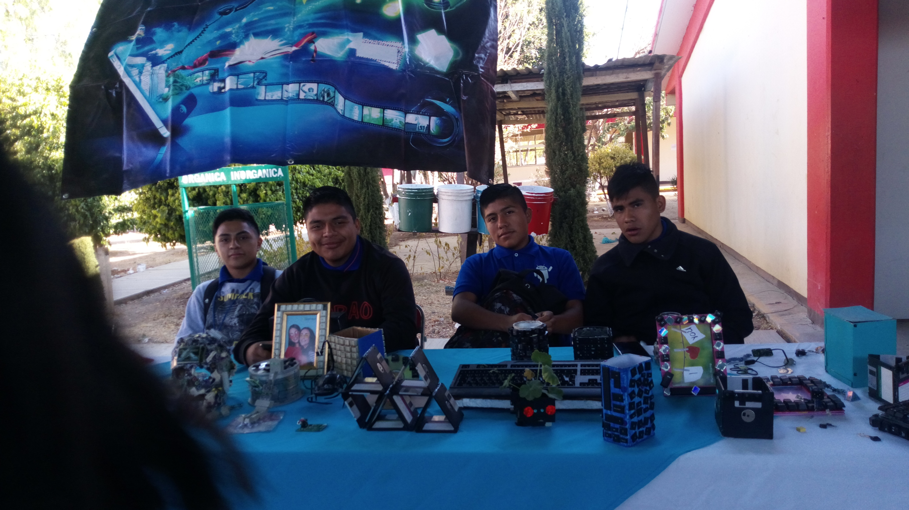

- 
-

-

-

Colegio de Bachilleres del Estado de Oaxaca
"Educación Publica de Calidad"
PLAN DE ESTUDIOS
| PRIMER MODULO: TERCER SEMESTRE | SEGUNDO MODULO: CUARTO SEMESTRE |
|
1.- Gestión de Archivos de Texto 2.- Hojas de Calculo Aplicado |
1.- Comunidades Virtuales 2.- Mantenimiento y Redes de Computo |
| TERCER MODULO: QUINTO SEMESTRE | CUARTO MODULO: SEXTO SEMESTRE |
|
1.- Base de Datos 2.- Programación |
1.- Paginas Web 2.- Diseño Digital |
| PRIMER MODULO: TERCER SEMESTRE | SEGUNDO MODULO: CUARTO SEMESTRE |
|
1.- Bases Anatomicas y Fisicas 2.- Epidemiologia |
1.- Nutrición 2.- Salud Publica |
| TERCER MODULO: QUINTO SEMESTRE | CUARTO MODULO: SEXTO SEMESTRE |
|
1.- Programa de Salud Publica 2.- Educación de Comunidad |
1.- Epidemiologia 2.- Enfermeria |


| PRIMER MODULO: TERCER SEMESTRE | SEGUNDO MODULO: CUARTO SEMESTRE |
|
1.- Principios Generales del Dibujo Técnico 2.- Elementos Basicos de Geometria Descriptiva |
1.- Elementos Basicos de Topografia 2.- Planos Arquitectonicos |
| TERCER MODULO: QUINTO SEMESTRE | CUARTO MODULO: SEXTO SEMESTRE |
|
1.- Revestimientos Constructivos 2.- Planos Estructurales y de Instalación |
1.- Materiales, Mezclas y Elementos de Construcción 2.- Proyecto Arquitectonico Integrador |


| PRIMER MODULO: TERCER SEMESTRE | SEGUNDO MODULO: CUARTO SEMESTRE |
|
1.- Emprendimiento y Empresa 2.- Proceso Administrativo |
1.- Legalidad Empresarial 2.- Mercadotecnia |
| TERCER MODULO: QUINTO SEMESTRE | CUARTO MODULO: SEXTO SEMESTRE |
|
1.- Finanzas 2.- Ventas y Difusión |
1.- Comunicacion de la Empresa 2.- Proyecto Emprendedor |